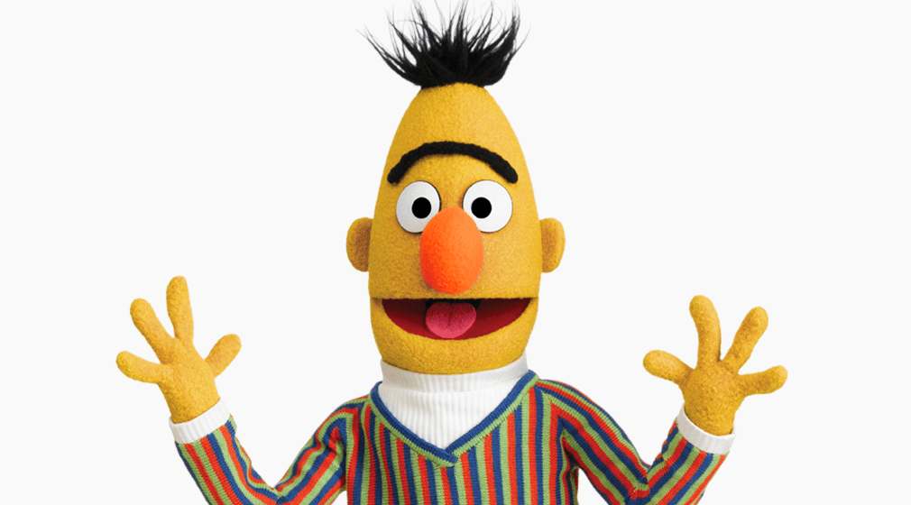
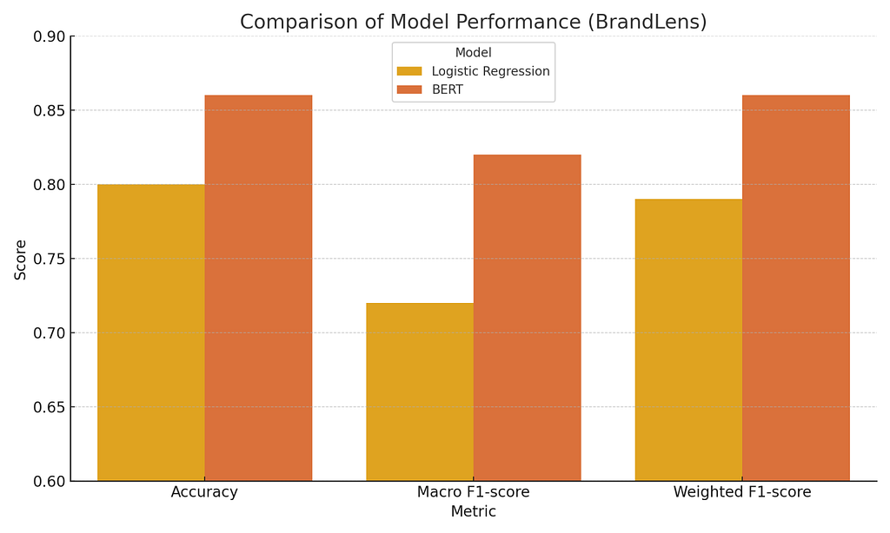

Writing · 15 June 2025 · AI · NLP · Machine Learning
BrandLens: Brand Sentiment Analysis Using BERT

Introduction
Understanding how people perceive a brand is essential for businesses in today’s digital and highly connected world. Public sentiment reflects trust, reputation, and customer experience, factors that directly influence a brand’s market performance. Natural Language Processing (NLP) provides tools to analyze these sentiments automatically and at scale.
As part of the NLP course at Stockholm University, our team developed BrandLens, a system designed to classify public sentiment about brands using two different approaches: a classical machine learning model (Logistic Regression) and a transformer-based deep learning model (BERT). This article summarizes our methodology, results, and reflections from the project.
Objective
The goal of BrandLens is to build an AI-powered NLP system capable of classifying brand-related public opinions into positive, neutral, or negative categories. The system leverages data from the Twitter US Airline Sentiment dataset, with over 14,000 manually labeled tweets related to U.S. airline companies.
In addition to developing the sentiment analysis pipeline, we sought to compare the performance of two contrasting approaches: Logistic Regression with TF-IDF vectorization and BERT fine-tuned on the same dataset.
Methodology
To ensure fair comparison, both models were trained and evaluated using the same train/test split and identical preprocessing steps.
Logistic Regression Pipeline
- Text vectorization using TF-IDF (max 5000 features)
- Model trained using scikit-learn
- Evaluation through precision, recall, F1-score, and accuracy
BERT Pipeline
- Tokenization using the cardiffnlp/twitter-roberta-base-sentiment tokenizer
- Fine-tuning via Hugging Face Trainer API (1 epoch, reduced batch size)
- Sentiment output mapped to the same label schema
Additionally, we implemented:
- Named Entity Recognition (NER) with SpaCy
- Keyword extraction with NLTK
- Model prediction analysis for selected example tweets
Results
Both models were evaluated based on classification metrics and qualitative predictions. Below is a summary of the results:

As seen in the chart, BERT outperformed Logistic Regression in all metrics. It showed particularly strong improvements in identifying positive and neutral sentiments, which tend to be more difficult to classify due to language subtlety.
It becomes clear why BERT laid the foundation for the large language models (LLMs) that dominate the field today, such as RoBERTa, ALBERT, T5, GPT-4, and Claude.
Qualitative Predictions
To validate the models, we tested three real-world-style tweets:
Tweet 1: “I love how Delta treats its passengers!”
- Logistic Regression → Neutral
- BERT → Positive (Confidence: 0.98)
Tweet 2: “Worst experience ever with United Airlines.”
- Logistic Regression → Negative
- BERT → Negative (Confidence: 0.99)
Tweet 3: “Flight was delayed but I finally made it.”
- Logistic Regression → Negative
- BERT → Negative (Confidence: 0.88)
These examples demonstrate BERT’s superior ability to capture emotional tone, context, and nuance in informal text such as tweets.
Challenges
Despite the promising results, several challenges were encountered:
- Data imbalance, with significantly fewer positive samples compared to negative ones
- Detection of sarcasm and irony, which often mislead models
- Ambiguity in neutral statements, which can contain mixed tones
- Social media noise, including abbreviations, emojis, and inconsistent grammar
Future Work
BrandLens has the potential to evolve beyond tweet analysis. Future extensions may include:
- Integration with real-time streaming APIs for live brand monitoring
- Support for multilingual classification across global markets
- Development of a dashboard interface for business stakeholders
- Improved handling of sarcasm, humor, and emotional shifts in text
- Exploration of zero-shot or few-shot classification with larger models like GPT-4 or DeBERTa
Conclusion
The BrandLens project showcased the power of NLP in extracting structured insights from unstructured text. Our comparative approach highlighted how classical models provide quick and interpretable results, while modern transformer architectures like BERT offer superior accuracy and context understanding. BrandLens stands as a scalable framework for brand sentiment monitoring that can be adapted to broader business and research applications.
References
- Bird, S., Klein, E., & Loper, E. (2009). Natural Language Processing with Python. O’Reilly Media.
- Devlin, J., Chang, M. W., Lee, K., & Toutanova, K. (2019). BERT: Pre-training of Deep Bidirectional Transformers for Language Understanding. arXiv preprint arXiv:1810.04805.
- Vaswani, A. et al. (2017). Attention is All You Need. Advances in Neural Information Processing Systems. Crowdflower. Twitter US Airline Sentiment Dataset. Available at: https://www.kaggle.com/datasets/crowdflower/twitter-airline-sentiment
- Wolf, T. et al. (2020). Transformers: State-of-the-Art Natural Language Processing. arXiv:1910.03771.
- SpaCy Documentation. https://spacy.io/
- NLTK Documentation. https://www.nltk.org/